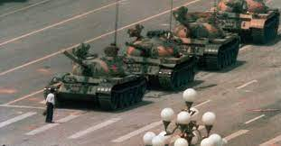

천안문 광장 앞에서 있었던 일련의 민주화 운동들을 말한다. 흔히 1차 천안문 사태라 불리는 1976년 천안문 사태와 2차 천안문 사태 혹은 천안문 항쟁으로 불리는 1989년의 천안문 6.4 항쟁이 유명하고 이중에서도 천안문 6.4 항쟁을 가리키는 경우가 많고 중국 공산당이 장갑차를 동원, 무고한 시민들을 깔아죽인 사건이 유명하다.

마오쩌둥 체제 말기인 1976년 4월에 일어났던 봉기.
온 중국인들의 존경을 받던 저우언라이 총리의 사망을 계기로 하여 중국인이 마오쩌둥의 문화대혁명에 반발한 봉기이다. 아래의 천안문 사태와는 천안문광장이라는 같은 장소에서 일어났다는 것 빼고는 관계가 별로 없다. 같은 장소에서 주석과의 갈등으로 실각한 온건파 전 총리의 사망을 추모하는 데서 시작되어 실제적인 거대한 (충돌을 포함한) 시위로 일어났다는 것은 공통점이나 이후의 전개와 후일의 중국 당국에서의 평가는 사뭇 달랐다.
1976년 1월, 저우언라이가 지병으로 사망하자 중국은 이후에 마오쩌둥이 죽었을 때와는 비교할 수 없는 엄청난 추모분위기에 휩싸였다. 이에 대해 저우언라이를 적대하던 장칭을 비롯한 4인방은 저우언라이를 비난하며 저우언라이 추모 분위기에 찬물을 끼얹는가 하면 공권력을 동원해서 추모를 방해했고 장칭 자신은 저우언라이의 장례식에 참여하여 매우 오만불손하게 구는 등 중국인들의 분노를 샀다. 그런 상황에서 3월 청명절 기간부터 베이징 시민들은 저우언라이를 추모하기 위해 천안문 광장에 있는 인민 영웅 기념비를 향한 행진을 시작했다.[1] 시민들은 화환을 걸고 저우언라이를 추모했는데 정부는 이 기념비에 바쳐진 화환을 전부 철거해버렸다. 이게 안그래도 문화대혁명으로 고통받고 쌓일 대로 쌓여 저우언라이라는 안전장치가 사라져 언제 폭발할지도 모르는 판국에 마오쩌둥과 장칭의 이런 행동은 중국인들의 분노에 제대로 불을 붙혔다. 당장 문화대혁명 항목을 보면 알겠지만 그 당시 중국인들은 온갖 핍박과 박해에다가 1970년대 초중반의 경제침체까지 겹쳐[2] 많이 쌓일대로 쌓인 지경이라 언제 폭발할지도 모르는 순간이었다.
결국 분노한 인민들은 4월 5일에 봉기하여 건물을 부수고 자동차에 불을 붙이는 등의 폭력 시위를 전개했다.[3] 심지어 마오쩌둥 체제를 뒤집어 엎으려는 시도도 일어났다. 중국 공산당은 이들을 반혁명세력으로 간주하고 공안을 동원하여 폭력적으로 해산시킴과 동시에 철저하게 탄압했으며 4인방은 이때다 싶어서 덩샤오핑 부주석에게 모든 책임을 물리고는 실각시켰다.
그 해 9월, 마오쩌둥이 사망하고 마오쩌둥 비판론이 힘을 얻으면서 2년 후인 1978년 11월 12일 중국공산당 11기 3차 중앙위원회 전체회의에서 이 사건에 대한 재심이 논의되었다. 마침내 11월 14일 중국공산당 중앙위원회 정치국 상무위원회의 추인을 받아 중국공산당 북경시위원회는 '천안문 사건은 혁명적 행동이었다'라는 평반(재평가)을 발표하여 해당자들을 모두 복권했다. 이후 11월 25일 중공 중앙공작회의 전체회의에서 중앙정치국이 공식적으로 천안문 사건은 혁명적 대중운동이었다는 내용을 발표하며 '천안문 사건'은 '4.5 운동'이라는 별칭을 얻게 되었다. 오늘날 4.5 운동은 4인방에 반대하는 인민들의 혁명적 행동으로 각급 학교 역사 교과서에 서술되고 있다.
중국 공산당 정부가 철저히 감추고 외국에서 비판하는 2차 항쟁과 달리, 1차 천안문 사태는 당에서조차 인정하지 않을 수 없었다.[4] 홍위병이 나라 전체를 작살낸 직후라 인민의 분노가 폭발 직전이었기 때문이다. 그러나 문화대혁명이 휩쓸고 간 피해를 없애기 위해 도입한 자본주의 정책이 양극화를 낳고, 이 양극화로 인한 불만이 다시 나온 2차 천안문 사태는 바로 그 문화대혁명 때 광기를 경험한 두려움 때문에 대화조차 시도하지 않고 무자비하게 박살내버렸다는 점에서 아이러니하다. 참고로 문화대혁명을 부정적으로 서술한 바이두 백과에서도 1차 항쟁은 나온다.